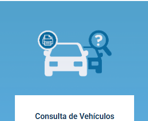
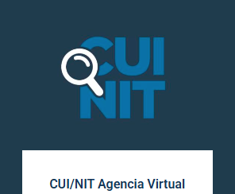
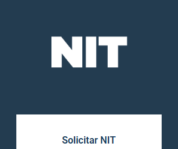
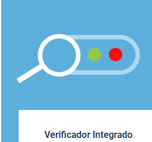

Bienvenidos/as, aquí estamos listas para gestionar tus impuestos, organizar tus finanzas y hacer crecer tu negocio. Nos especializamos en brindar tranquilidad y claridad financiera a nuestros clientes.




Misión
Brindar asesoría contable, tributaria y laboral práctica a emprendedores y negocios locales, ayudándolos a ordenar su información y tomar decisiones financieras acertadas.
Visión
Ser el estudio contable de referencia, destacado por simplificar el mundo fiscal y financiero a través de la digitalización, la mejora continua y un servicio excepcional.
¿Qué es el portal SAT?
Es la plataforma digital oficial de la Superintendencia de Administración Tributaria (SAT) en Guatemala. Reúne todos los servicios, trámites y consultas tributarias en línea para facilitar el cumplimiento de las obligaciones fiscales y aduaneras de los contribuyentes.
¿Porque es importante realizar sus tramites en el portal SAT?
Te permite cumplir con tus obligaciones tributarias de forma rápida y segura desde tu computadora o celular. Evitas largas filas y ahorras tiempo, teniendo acceso a tus servicios las 24 horas del día. Así como en tu Agencia Virtual ofrece beneficios clave
Información
Dirección
4ª Calle y 6ª Avenida, Zona 1, Santa Cruz del Quiché
Horario de atención
Jueves 18 de junio de 2:00 p. m. a 5:00 p. m.
Teléfonos
46910835/37817058